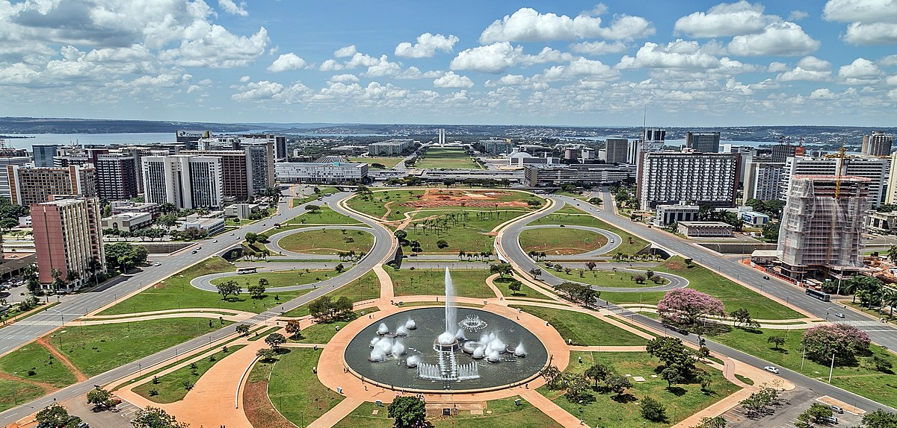
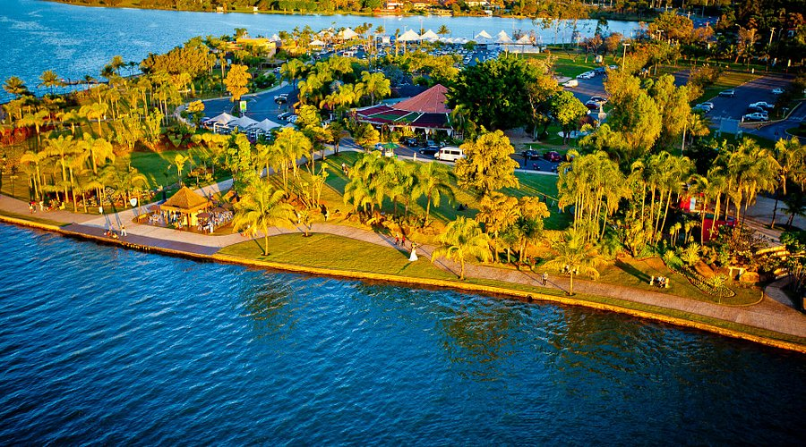
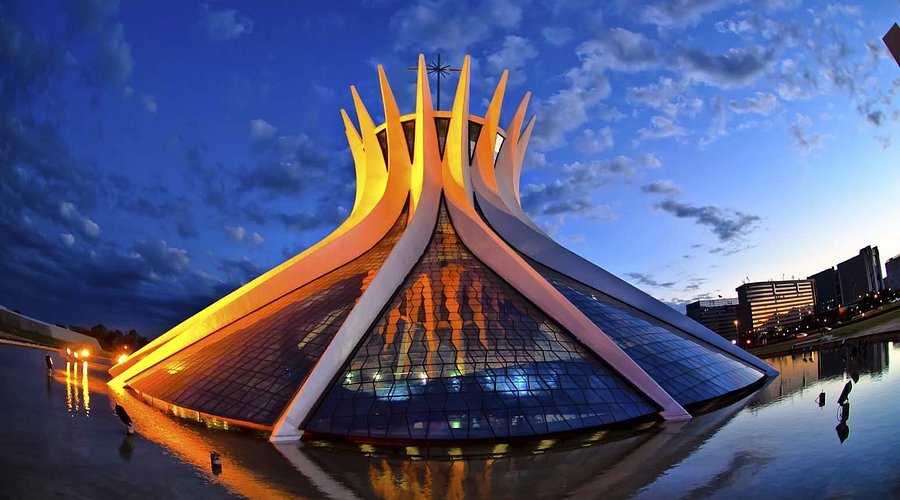
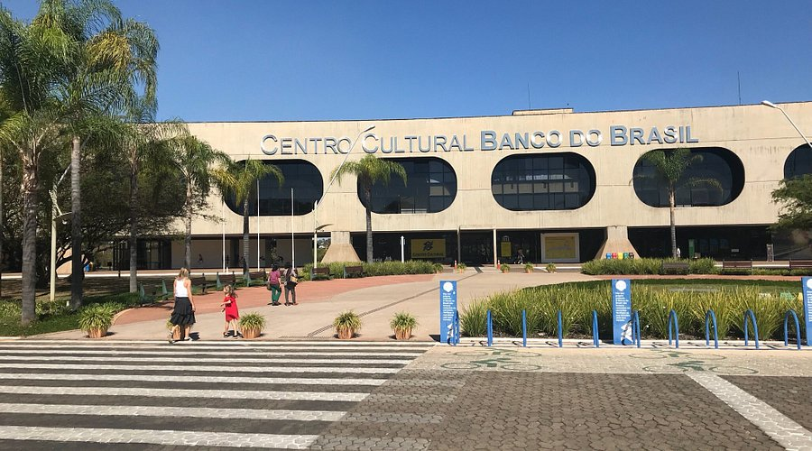

Conheça Brasília
Brasília, inaugurada como capital do Brasil em 1960, é uma cidade planeada que se distingue pela sua arquitetura branca e moderna, essencialmente concebida por Oscar Niemeyer. Disposta em forma de avião, a sua "fuselagem" é o Eixo Monumental, 2 avenidas amplas flanqueadas por um enorme parque. No "cockpit" encontra-se a Praça dos Três Poderes, cujo nome provém das 3 agências do governo que a rodeiam.
Descubra 3 destinos imperdíveis em Brasília
- Pontão do Lago Sul
- Catedral Metropolitana
- Centro Cultural Banco do Brasil
Pontão do Lago Sul
À beira do lago, o Pontão é o centro gastronômico mais especial da cidade de Brasília, reunindo seis dos melhores restaurantes.
Catedral Metropolitana
A Catedral Metropolitana - Nossa Senhora Aparecida ou simplesmente Catedral de Brasília, é um templo católico brasileiro, na qual se encontra a cátedra da Arquidiocese de Brasília, localizada na capital federal, ao sul da S1, no Eixo Monumental, região da Esplanada dos Ministérios.
Centro Cultural Banco do Brasil
Inaugurado no dia 12 de outubro de 2000, o Centro Cultural Banco do Brasil em Brasília foi criado para inserir a capital do país no roteiro nacional dos melhores eventos e produções culturais. A programação inclui projetos nas áreas de música, teatro, artes plásticas, cinema, dança, ideias e arte-educação. Espaço multidisciplinar, o CCBB Brasília proporciona um ambiente de convivência que aproxima o público da arte em suas diferentes formas de expressão. Além dos espaços culturais, a estrutura conta com deck, cafés, bistrô, fraldário e caixas eletrônicos do Banco do Brasil.